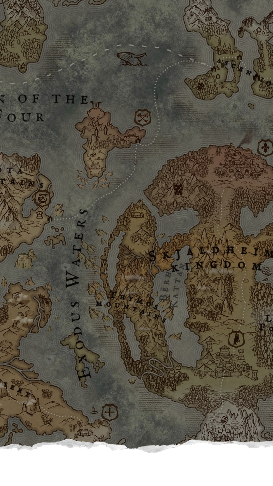
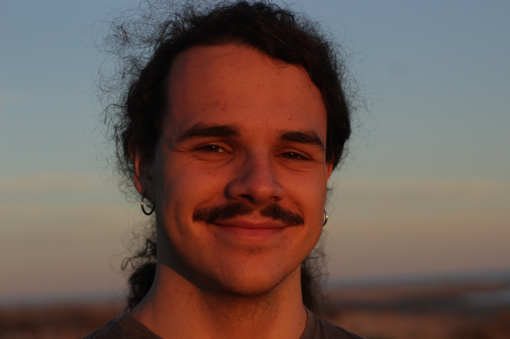
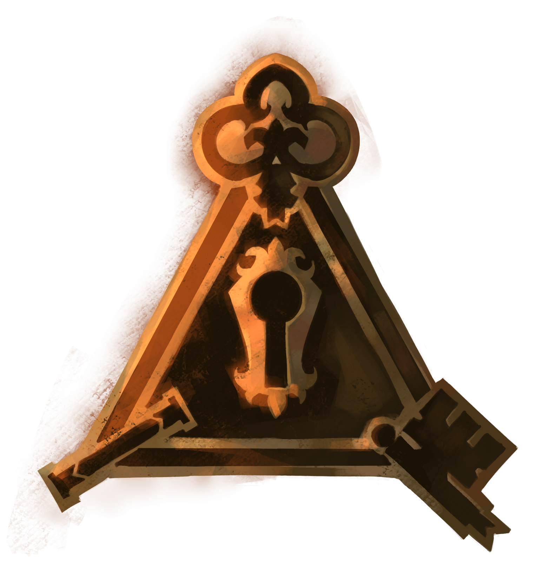
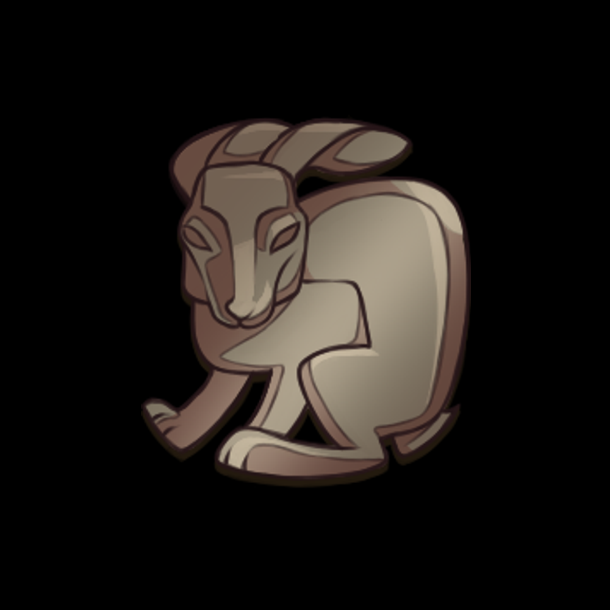
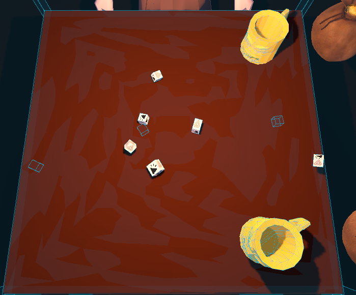
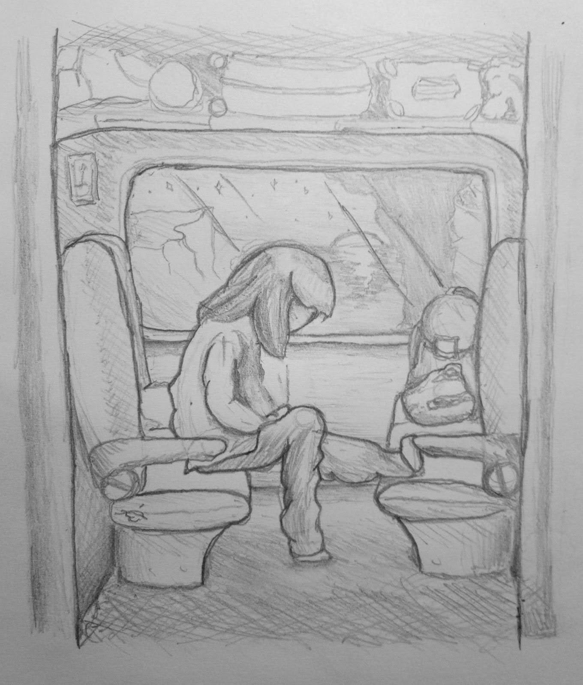
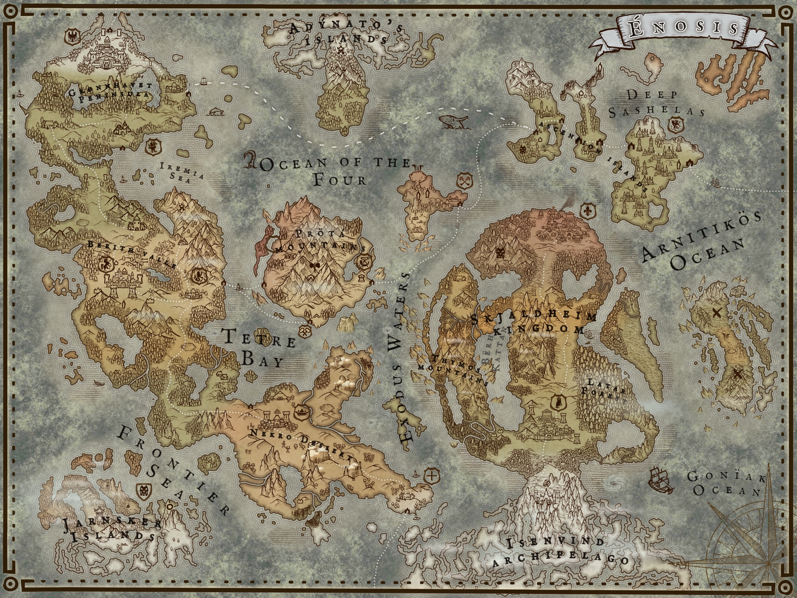

ALONSO
MADRIGAL
HERNÁNDEZ
MADRIGAL
HERNÁNDEZ
NARRATIVE DESIGNER
AND PROGRAMMER
AND PROGRAMMER


I'm a graduate in Game Design and Development from Universitat Jaume I. I’ve participated in several game jams, earning recognition and awards for creative and technical excellence.
My passion for storytelling and interactive design drives my work as both a narrative designer and a programmer. Outside of development, I write fiction and serve as a Dungeon Master, experiences that have deepened my understanding of worldbuilding, character creation, and player agency.
I also research Game Studies, exploring how narrative, mechanics, and player experience intersect. Additionally, I'm a contributor at HyperHype, an independent magazine focused on video game culture and criticism.

Purple Hazard is my final degree project. In this project, I designed and implemented a modular dialogue system for visual novels, featuring CSV support and a simple DSL for writing and managing dialogue, including a custom parser for the DSL and tools to streamline narrative iteration. I was fully responsible for the programming, developing the architecture in C# using Godot 4.6. In addition, I led the creation of the world, character design, and narrative development, including dialogue writing.


DiceGame is the working title of a game currently in development since December 2025. It is a roguelike focused on building synergistic dice-based builds. I was responsible for the full narrative design, including the story, characters, dialogue, and even part of the voice work.
HyperHype is an independent video game magazine founded in 2018, dedicated to offering critical, thoughtful, and creative perspectives on the gaming industry. With a team of passionate writers, we strive to professionalize independent journalism, treating readers as curious and intelligent players capable of reflection and debate.

Messages explores the fragility of social networks and psychological manipulation in the age of mobile omnipresence. The story follows Elizabeth, a young photographer from Oslo working on a Norwegian TV series.
I led the narrative and gameplay design, developing characters, relationships, and multiple branching endings. The story structure was mapped and prototyped in Twine to visualize player choices and narrative flow.
In the game, players control Zacarias, who explores Vilanova d'Alcolea alongside his companion, facing a variety of dynamic minigames.
The Flame of Sant Antoni was part of a triple university project, earning awards for Best Adapted Story, Best Narrative, and Best Creative Direction. I contributed by writing dialogue, programming most game elements, and assisting in character design.

Enosis is my personal long-term worldbuilding project for Dungeons & Dragons. I’ve created an expansive universe with cities, maps, magic systems, and dynamic storylines, designing countless characters and interconnected plots.
The project has challenged me to improvise within structured narrative design, ensuring coherence across a living, evolving world.
%20(1).jpg)
.jpg)

At Diluna, we conduct research in video game narrative and Game Studies, producing academic papers, opinion articles, and video essays aimed at fostering critical thinking about the games we love. Our goal is to make the language and theory of games more accessible, helping audiences understand how storytelling and design shape player experience.
Superalon is my YouTube channel dedicated to video game analysis and narrative psychology. I explore the motivations and emotions of beloved characters, discuss academic papers from Diluna, and create video essays that examine the elements shaping the nature of compelling stories. Through this channel, I advocate for video games as an artistic and architectural form of expression.
HyperHype is an independent video game magazine founded in 2018, dedicated to offering critical, thoughtful, and creative perspectives on the gaming industry. With a team of passionate writers, we strive to professionalize independent journalism, treating readers as curious and intelligent players capable of reflection and debate.